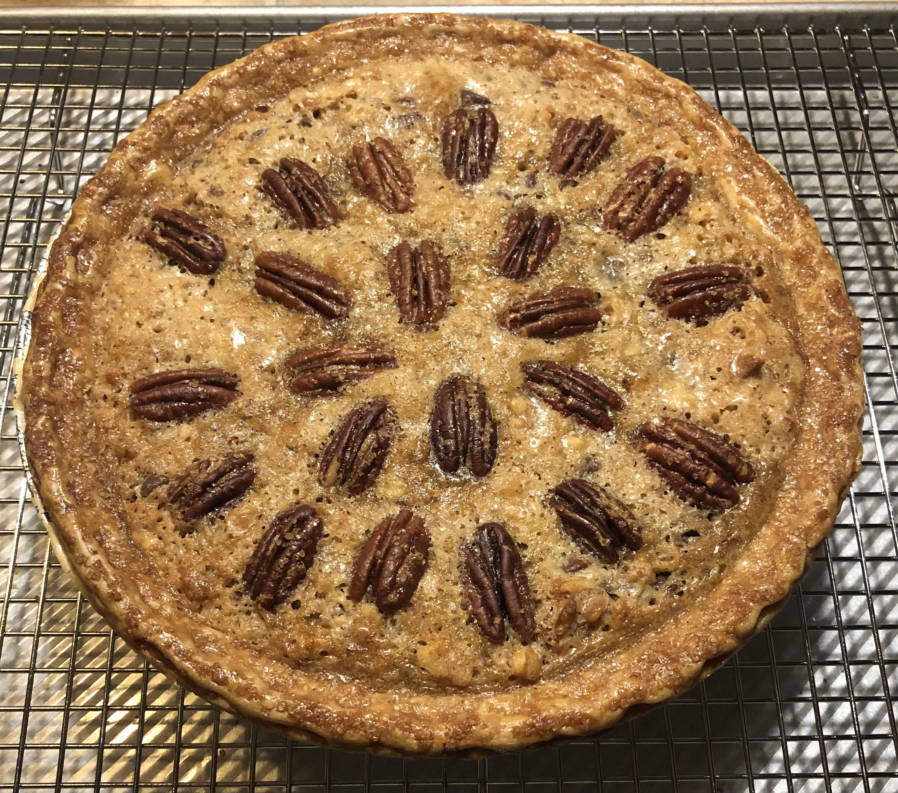

Chocolate Nut Pie

Chocolate Pie with walnuts or pecans
Also named after a Kentucky horse race. Great for family holidays. Two versions here.
Version 1
Ingredients
- 2 eggs, slightly beaten
- 1 cup sugar
- 1/2 cup butter, melted
- 3 to 4 tablespoons Kentucky Bourbon
- 1/4 cup corn starch
- 1 cup chopped pecans
- 1 cup semi-sweet chocolate bits
- unbaked 9 inch pie shell
Steps
- Combine the eggs, sugar, melted butter and bourbon. Add the cornstarch to the mixture, blending in slowly.
- Stir in the pecans and chocolate bits. Pour into pie shell. You can decorate by laying whole pecans on top.
- Bake in a pre-heated 350°F oven for approximately 45 minutes.
Version 2: Makes 2 pies
Ingredients
- 1 1/2 cups sugar
- 6 tablespoons flour
- 6 eggs, beaten by hand
- 1 1/2 cups butter, melted
- 1/3 cup Kentucky Bourbon Whiskey
- 1 tablespoon vanilla extract
- 1 1/2 cups chocolate chips
- 1 1/2 cups walnuts, chopped
- 2 unbaked 9 inch pie shells
Steps
- Combine ingredients and pour into two unbaked pie shells.
- Bake at 350°F for 50 minutes.